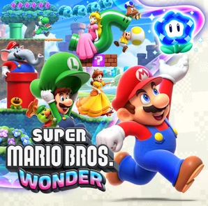

Super Mario Bros. Wonder


| Verhaal | Genre | Release datum |
|---|---|---|
| Wanneer slechterik Bowser het feest van prins Florian onverwacht bezoekt, steelt hij een wonderbloem. Hiermee versmelt Bowser het kasteel van prins Florian en tovert het om tot een zwevend fort. Aan Mario en zijn vrienden de taak om het kwaadaardige plan van Kasteel-Bowser te stoppen. | Platform | 20 oktober 2023 |